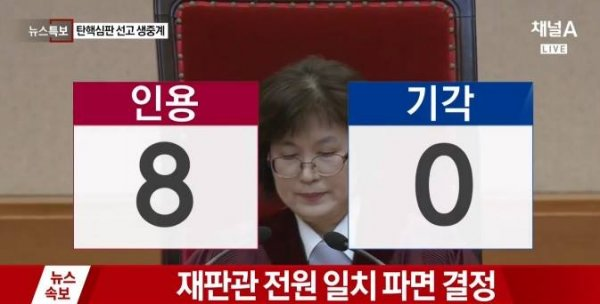
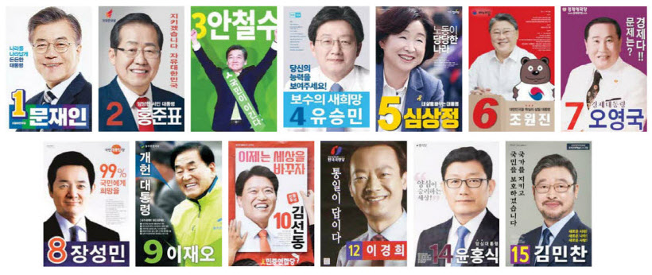

탄핵
탄핵이란
일반 사법절차로는 소추나 처벌이 어려운 정부의 고급공무원이나 신분이 강력하게
보장되어 있는 법관 등에 대하여 국민의 대표기관인 국회가 헌법 또는 법률이 정한 바에
소추하여 처벌하거나 파면하는 제도.
[출처]NAVER 국어사전

8인의 현자 "朴 대통령을 파면한다" 최종 결정 (종합2보)
[머니투데이 이태성 기자, 김종훈 기자]
[[朴 대통령 파면]"파면함으로써 얻는 헌법수호 이익이 압도적으로 크다" 재판관 전원일치]
헌법재판소가 박근혜 대통령의 파면을 결정했다.
현직 대통령 탄핵이 인용된 것은 헌정 사상 최초다.
대한민국은 이제 한번도 걸어보지 않은 길로 들어섰다.
헌재는 10일 재판관 전원일치의 의견으로 박 대통령의 탄핵을 결정했다.
박 대통령은 이에 따라 즉시 대통령 직에서 물러나야 한다.
헌재는 박 대통령의 탄핵소추 사유를
△국민주권주의와 법치주의 위반 △대통령의 권한남용 △언론 자유 침해
△생명권 보호의무 위반 △뇌물수수 등 형사법 위반 등 5가지 유형별로 정리해 심리했다.
헌재는 이중 박 대통령이 국민주권주의와 법치주의, 형사법을 위반했다고 봤다.
헌재는 박 대통령이 '비선실세' 최순실씨에게 국가 정책 문건을 유출했고 미르·K스포츠재단
설립 및 모금에 관여했으며 최씨의 지인 업체인 KD코퍼레이션에 특혜를 제공하는 등에
개입했다는 것을 사실로 인정했다. 박 대통령이 최씨 사익추구를 지원하고 이를 위해 법률을
위반했다는 것이 헌재의 최종적인 판단이다.
헌재는 "박 대통령의 이러한 위헌, 위법행위는 대의민주주의 원리와 법치주의 정신을 훼손했다"며
"박 대통령이 검찰과 특검 조사에 응하지 않고 청와대 압수수색을 거부하는 등 법위배행위가
반복되지 않게 해야 할 헌법수호의지가 드러나지 않는다"고 밝혔다.
이어 "박 대통령의 법 위반행위가 헌법질서에 미치는 부정적 영향과 파급효과가 중대하다"며
"박 대통령을 파면함으로써 얻는 헌법수호의 이익이 압도적으로 크다"고 덧붙였다.
다만 헌재는 박 대통령이 권한을 남용해 공무원 인사에 개입했는지 여부, 언론의 자유를
침해했는지 여부 등은 명확하지 않아 탄핵사유로 인정할 수 없다고 했다.
세월호 사고와 관련해서도 "국민의 생명이 위협받는 재난상황이 발생했다고 해서 박
대통령이 직접 구조활동에 참여해야 하는 등 구체적이고 특정한 행위 의무까지 바로 발생한다고
보긴 어렵다"며 "대통령 직책을 성실히 이행하지 않았다는 것은 탄핵심판 판단대상이 되지 않는다"
고 설명했다.
김이수, 이진성 재판관은 여기에 더해 "박 대통령이 생명권 보호의무를 위반하지는 않았지만
헌법상 성실한 직책수행의무 및 국가공무원법상 성실의무를 위반했다"며 "다만 역시 파면 사유를
구성하기는 어렵다"는 보충의견을 냈다.
안창호 재판관은 "이 사건 탄핵심판은 보수와 진보라는 이념의 문제가 아니라 헌법질서를
수호하는 문제로 정치적 폐습을 청산하기 위해 파면결정을 할 수밖에 없다"는 의견을 보탰다.
헌재는 이번 사건을 심리하는데 92일의 시간을 쏟았다. 3차례의 준비기일과 17차례의
변론기일이 열렸으며 25명에 대한 증인 신문이 이뤄졌다. 헌재는 휴일을 제외한 60여일동안
매일 재판관 평의를 진행했으며 재판관들은 4만8000여쪽에 달하는 증거조사 자료와 40박스에
이르는 탄원서를 모두 검토했다.
이정미 헌재소장 권한대행은 "재판부는 국민들로부터 부여받은 권한에 따라 이뤄지는
이 선고가 국론분열과 혼란을 종식시키고 화합과 치유의 길로 나가는 밑거름이 되길 바란다"고
말했다.
대선 직전!
[선택! 5.9 대선]공정한 대한민국으로… 우리가 투표해야 하는 이유
오늘 '투표일' 80%대 투표율 기대 속 비 변수
짧고도 긴 레이스 후보들 전국 누빈 지지호소
당선자 자정 윤곽… 당락은 10일 오전 3시께

9일 오늘, 국민들은 향후 5년간 대한민국을 새롭게 리빌딩할 지도자를 선출하게 된다.
국정농단 사건으로 인한 사상 초유의 대통령 파면에 따른 조기 대선정국이
사실상 이날 마무리되는 것이다.
대한민국을 다시 세우려는 국민들의 열기도 뜨겁다. 사전 투표율이 역대 최고치인
26.1%를 기록하면서 중앙선관위는 8일 최종투표율이 80%대를 기록할 것이라고 내다봤다.
이미 전체 유권자 4천247만9천710명중 1천107만여 명은 사전투표를 통해 소중한 권리를 행사했다.
80%대 대선 투표율은 지난 1997년 15대 대선(80.7%)이 마지막이다.
투표일 전국에 비 소식이 있는 게 마지막 변수다.
대선투표는 전국 1만3천964개 투표소에서 9일 오전 6시부터 오후 8시까지 14시간 동안 진행된다.
선거일 당일 투표는 주소지 관할 투표소에서만 할 수 있으며,
주민등록증이나 면허증·여권 등 신분증을 지참해야 한다.
당선자 윤곽은 빠르면 9일 자정, 당락 결정은 개표율이 80%대를 기록하는 10일
오전 3시께가 될 것으로 예상된다.
후보 간 득표 격차가 클 경우 이보다 한 두 시간 가량 빨리 당락이 결정될 수도 있다.
김용덕 중앙선거관리위원장은 8일 대국민담화를 통해 "현명한 선택만이 우리의 꿈을
현실로 만들 수 있다"면서 투표참여를 당부했다.
짧고도 긴 대선 레이스를 펼친 대선후보들은 이날 마지막까지 혼신을 다해 지지를 호소했다.
더불어민주당 문재인 후보는 "사상 최초로 전국에서, 전 세대에서 지지받고 싶다.
사상 최초의 통합대통령이 되고 싶다"며 "힘을 모아달라. 표를 몰아달라"고 목소리를 높였다.
자유한국당 홍준표 후보는 "좌파가 무너뜨린 자유대한민국 기초를 다시 세우겠다"면서
"내일 대역전의 기적을 완성하겠다"고 투표참여와 지지를 당부했다.
국민의당 안철수 후보도 "민심의 바다가 여론조사를 뒤집을 것"이라며
"과거와 미래의 대결에서 미래가 승리할 것임을 확신한다"고 마지막 역전론을 강조했다.
아울러
바른정당 유승민 후보는 소신과 양심 투표를 호소하며 "여러분이
제 정치를 지지한다면 꼭 한 표를 주셔서 우리나라를 바로잡을 수 있도록 도와달라"고 말했다.
정의당 심상정 후보는 "내일은 더 강한 개혁, 더 큰 변화를 위해 투표해 달라"며
"심상정에게 투표해야 촛불시민의 열망이 실현될 수 있다"고 마지막 호소를 했다.
/김태성기자 mrkim@kyeongin.com
당선
문재인 대통령 취임 “제왕적 권력 나누겠다”
“권력기관 정치독립…여건 되면 평양에 갈 것”
국무총리 이낙연, 국정원장 서훈 지명
시진핑 “상호 이해와 존중…협력강화” 축전
문재인 대통령이 10일 국회에서 취임선서식을 열고 임기 5년의 제19대 대한민국 대통령에
취임했다.
문 대통령은 이날 낮 12시 서울 여의도 국회의사당 중앙홀에서 취임선서를 한 뒤
‘국민께 드리는 말씀’을 통해 “통합과 공존”을 강조했다.
문 대통령은 “제 가슴은 한 번도 경험하지 못한 나라를 만들겠다는 열정으로 뜨겁다”며
“이번 선거에서는 승자도 패자도 없다. 우리는 새로운 대한민국을 함께 이끌어가야
할 동반자”라고 밝혔다.
문 대통령은 “이번 대통령 선거에서 우리 국민은 전국 각지에서 고른 지지로
새로운 대통령을 선택해주셨다. 오늘부터 저는 국민 모두의 대통령이 되겠다.
저를 지지하지 않았던 국민 한분 한분도 저의 국민, 우리의 국민으로 섬기겠다”고 강조했다.
문 대통령은 이어 “권위적인 대통령 문화를 청산하겠다. 준비를 마치는 대로
지금의 청와대에서 나와 광화문 대통령 시대를 열겠다. 참모들과 머리와 어깨를
맞대고 토론하겠다. 국민과 수시로 소통하는 대통령이 되겠다”며 ‘탈권위’를 선언했다.
그는 특히 “대통령의 제왕적 권력을 최대한 나누겠다”며 “권력기관은 정치로부터 완전히
독립시키겠다. 어떤 기관도 무소불위의 권력을 행사할 수 없도록 견제장치를 만들겠다”고
말했다. 국가정보원·검찰·경찰 등 권력기관에 대한 개혁에 나서겠다는 뜻을 분명히 밝힌 것이다.
또 “재벌개혁에도 앞장서겠다”며 “문재인 정부하에선 정경유착이라는
낱말이 완전히 사라질 것”이라고 강조했다.
문 대통령은 최대 현안인 안보 위기 해결과 관련해 “한반도의 평화를 위해 동분서주하겠다”며
“필요하면 곧바로 워싱턴으로 날아가겠다. 베이징과 도쿄에도 가고 여건이 조성되면 평양에도
가겠다”고 말했다. 또 “사드 문제 해결을 위해 미국 및 중국과 진지하게 협상하겠다”고
강조했다. 시진핑 중국 국가주석은 문 대통령에게 축전을 보내 “상호 이해와 존중의 기초
위에서 이견(불일치)을 적절히 처리하고, 협조와 협력을 강화하자”고 제안했다.
사드 등으로 악화된 한-중 관계의 회복을 염두에 둔 발언으로 보인다.
문 대통령은 이밖에도 △야당과 대화 정례화 △능력 위주 인사 원칙 △일자리 챙기기 등을
약속하며, “국민과 역사가 평가하는 성공한 대통령이 되기 위해 최선을 다하겠다”고 다짐했다.
문 대통령은 이날 오후 청와대 춘추관에서 기자회견을 열어 이낙연 국무총리 후보자와 서훈
국정원장 후보자를 지명하고, 임종석 대통령 비서실장과 주영훈 청와대 경호실장을 임명하는
등 본격적인 조직 정비와 인선에 나섰다. 문 대통령은 “지금 상황은 하루속히 국정을
안정시켜야 하는 비상 과도기로 유능한 내각, 통합형 내각을 신속하게 출범시켜야 한다”고
강조했다.
이어 문 대통령은 청와대 본관 집무실에서 ‘일자리위원회 설치’를 제1호 업무지시로 내렸다.
대선 과정에서 ‘일자리 대통령’을 자임하며 일자리 창출 공약을 앞세웠던 기조를 이어가겠다는
의미로 풀이된다.
최혜정 기자, 베이징/김외현 특파원 idun@hani.co.kr
[출처]원문보기:
http://www.hani.co.kr/arti/politics/assembly/794244.html#csidx62dda643c5df8ae85fd435aa7fce238